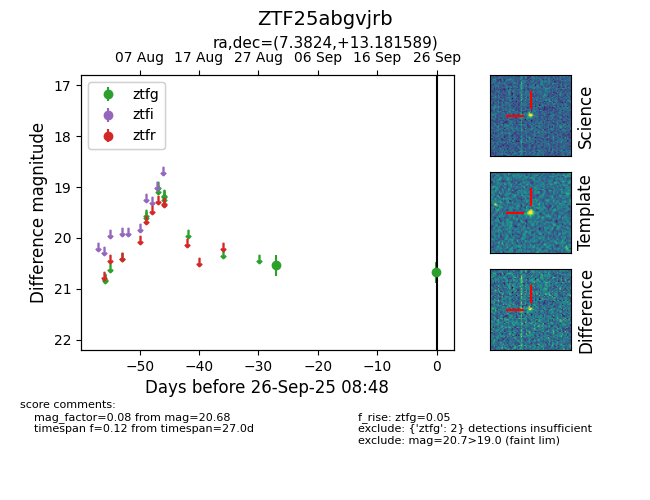

FINK: ZTF25abgvjrb
Lasair: ZTF25abgvjrb
ALeRCE: ZTF25abgvjrb
ZTF25abgvjrb (ztf,fink)
equatorial (ra, dec) = (7.3824,+13.18159)
galactic (l, b) = (114.7317,-49.34102)

last ztfg=20.68
2 ztfg detections